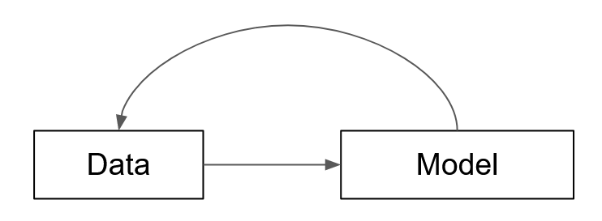

Sometimes called Environmental Niche Models (ENMs, I prefer SDM)
Possible the most well-developed application of classic Data Science and Machine Learning (ML) in Biology
They take in data on the environment at different sites or parts of a landscape and try predict where (or when, or how many) organisms will occur there. Data on the species themselves can also be used
Traditionally done on single species at a time, but ‘joint’ species distribution models are increasingly common
SDMs as Data Science
To make an SDM you use a Data Science workflow
The final model used to predict species occurrence is fit using Machine Learning techniques
A Data Science workflow has two major components:
Data
a Model
Data and Models
Data Processing Steps
Model Building
Data feeds into Models
Models inform Data processing steps

Data Science Steps
A Question
Collect Data
Munge / Clean Data
Transform Data for Model
Analyze Data using Model
Validate / Test Model
Interpret Model
Data Science Steps
A Question
Collect Data
Munge / Clean Data
Transform Data for Model
Analyze Data using Model
Validate / Test Model
Interpret Model
What is a Model?
Encodes a relationship between a set of inputs and outputs
For an SDM this is a (potentially complex and nonlinear) function that takes environmental variables as input and its output is an occurrence pattern (could be abundance, probability, suitability, etc.)
Different Models differ in their assumptions, or inductive biases, and their parameters
Models are ‘fit’ to data
Parameters are chosen based on how well the Model’s output matches the real data